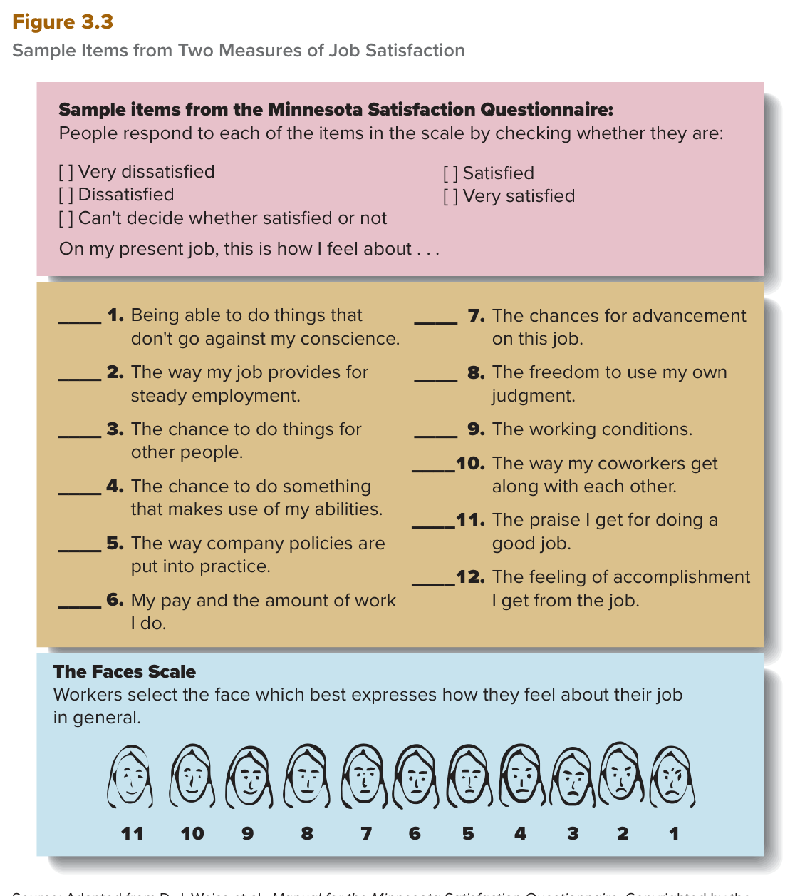

MGT 102 · Chapter 3 · القسم ٢ من ٤:
Values and Attitudes
الهدف LO3-2: Explain what values and attitudes are, and describe their impact on managerial action.
في الدرس اللي قبل عرفت سمات الشخصية (personality traits) — الصفات الثابتة عند المدير. الحين ننتقل لثلاث أشياء تلتقط تجربة المدير الشخصية في شغله: values (القيم)، attitudes (الاتجاهات)، وmoods and emotions (المزاج والمشاعر — درس ٣). درسنا هذا يغطي أول ثنتين.
ركّز من الحين: الفصل هذا مليان أزواج تعريفات تشبه بعض حرفياً — terminal مقابل instrumental، وjob satisfaction مقابل organizational commitment. الاختبار يعطيك التعريف ويسألك وش المصطلح، أو يعطيك موقف ويسألك أي مفهوم ينطبق. خذ التعاريف الإنجليزية حرفية من صناديق EXAM BOX ولا تترجمها لنفسك بالاختبار.
الكتاب يفتح القسم بأربع أسئلة عن المدير: وش يسعى يحققه؟ كيف يعتقد إنه لازم يتصرف؟ وش رايه في وظيفته ومنظمته؟ وكيف يحس فعلاً في الشغل؟ والإجابات تطلع من ثلاث مجموعات: values وattitudes وmoods and emotions.
| المجموعة | بالعربي | تجاوب على | وين تدرسها |
|---|---|---|---|
| Values | القيم | وش المدير يحاول يحققه من خلال الشغل، وكيف يعتقد إنه لازم يتصرف | هذا الدرس |
| Attitudes | الاتجاهات | أفكاره ومشاعره عن وظيفته ومنظمته المحدّدة | هذا الدرس |
| Moods and emotions | المزاج والمشاعر | كيف يحس فعلاً وهو يدير | درس ٣ (LO3-3) |
الثلاثة هذي شخصية جداً، بس الكتاب يقول لك ليش نهتم فيها: لأنها تفسّر كيف المدير يتصرف، وكيف يعامل الناس ويرد عليهم، وكيف يساهم في فعالية المنظمة من خلال الوظائف الأربع — planning, leading, organizing, and controlling. يعني ربط مباشر مع الفصل الأول، وهذا الربط يجي بالاختبار.
Values, attitudes, and moods and emotions capture how managers experience their jobs as individuals. Values describe what managers are trying to achieve through work and how they think they should behave. Attitudes capture their thoughts and feelings about their specific jobs and organizations. Moods and emotions encompass how managers actually feel when they are managing.
Although these three aspects of managers' work experience are highly personal, they also have important implications for understanding how managers behave, how they treat and respond to others, and how, through their efforts, they help contribute to organizational effectiveness through planning, leading, organizing, and controlling.
القيم الشخصية عند الكتاب نوعين بس:
| المصطلح | التعريف بالإنجليزي (احفظه حرفي) | بالعربي |
|---|---|---|
| Terminal value قيمة غائية |
A lifelong goal or objective that an individual seeks to achieve. | هدف أو غاية مدى الحياة الشخص يسعى يحققها. |
| Instrumental value قيمة وسيلية |
A mode of conduct that an individual seeks to follow. | نمط سلوك الشخص يسعى يتبعه. |
| Norms الأعراف |
Unwritten, informal codes of conduct that prescribe how people should act in particular situations and are considered important by most members of a group or an organization. | قواعد سلوك غير مكتوبة وغير رسمية تحدد كيف الناس لازم تتصرف في مواقف معيّنة، ومعظم أعضاء المجموعة أو المنظمة يعتبرونها مهمة. |
| Value system نظام القيم |
The terminal and instrumental values that are guiding principles in an individual's life. | القيم الغائية والوسيلية اللي تشتغل مبادئ موجّهة في حياة الشخص. |
الترتيب المنطقي اللي يحبون يسألون عنه: القيم الغائية (terminal values) غالباً تؤدي لتكوين الـnorms. أمثلة الكتاب على الـnorms: التصرف بأمانة (behaving honestly) أو بلطف (courteously). يعني السهم يمشي من القيمة الغائية → للعرف، مو العكس.
Milton Rokeach باحث رائد في مجال القيم الإنسانية، وهو صاحب الأرقام اللي لازم تحفظها:
القيم الغائية المهمة للمدراء (ثلاث أمثلة من الكتاب): a sense of accomplishment (الإحساس بالإنجاز)، equality (المساواة)، self-esteem (تقدير الذات). مثال الكتاب: المدير اللي يشوف الإحساس بالإنجاز مهم بشكل خاص، ممكن يركّز طاقته على مساهمة دائمة للمنظمة — زي تطوير منتج جديد أو فتح فرع أجنبي (foreign subsidiary).
القيم الوسيلية المهمة للمدراء (خمسة — احفظ العدد):
| # | Instrumental value | بالعربي |
|---|---|---|
| ١ | Ambitious | طموح |
| ٢ | Open minded | منفتح الذهن |
| ٣ | Competent | كفؤ |
| ٤ | Responsible | مسؤول |
| ٥ | Self-disciplined | منضبط ذاتياً |
مثال الكتاب: المدير اللي يعتبر إنه يكون honest and responsible في قمة الأهمية، ممكن يصير القوة الدافعة لخطوات تضمن إن كل أعضاء المنظمة يتصرفون بشكل أخلاقي.
الخلاصة: نظام قيم المدير يدل على وش يحاول يحققه ويصير عليه في حياته الشخصية وفي شغله — عشان كذا الكتاب يسمّي أنظمة القيم أدلة أساسية لسلوك المدير (fundamental guides) ولجهوده في planning, leading, organizing, and controlling.
من فاتحة الفصل (A Manager's Challenge): Marianne Harrison، الرئيسة التنفيذية لـJohn Hancock، خلّت فريق المبيعات يقضي شهر كامل يرد على مكالمات العملاء. الخطوة هذي حسّستهم بوش يهم العميل، ورسّخت التركيز على العميل كقيمة للشركة — هذا مثال حيّ على مدير يشكّل قيم منظمته.
A terminal value is a personal conviction about lifelong goals or objectives; an instrumental value is a personal conviction about desired modes of conduct or ways of behaving. Terminal values often lead to the formation of norms, which are unwritten, informal codes of conduct, such as behaving honestly or courteously, that prescribe how people should act in particular situations and that are considered important by most members of a group or an organization.
Milton Rokeach, a leading researcher in the area of human values, identified 18 terminal values and 18 instrumental values that describe each person's value system. By rank ordering the terminal values from “1 (most important as a guiding principle in one's life)” to “18 (least important as a guiding principle in one's life)” and then rank ordering the instrumental values from 1 to 18, people can give good pictures of their value systems.
التعريف الأقصر في الفصل كله، احفظه حرفي: attitude = A collection of feelings and beliefs (مجموعة من المشاعر والمعتقدات). المدراء زي كل الناس عندهم اتجاهات عن وظايفهم ومنظماتهم، والاتجاهات هذي تأثّر على أسلوبهم في الشغل. والكتاب يقول: اتجاهين هم الأهم في السياق هذا — job satisfaction وorganizational commitment.
Job satisfaction (الرضا الوظيفي) = The collection of feelings and beliefs that managers have about their current jobs. المدير اللي عنده رضا وظيفي عالي:
ونقطة يحبونها بالاختبار: مستويات الرضا الوظيفي ترتفع كل ما طلعت أعلى في الهرم (as one moves up the hierarchy) — يعني upper managers عموماً أكثر رضا من entry-level employees. ورضا المدراء ممكن يتراوح من منخفض جداً إلى عالي جداً.
تتوقع إنه في الأوقات الاقتصادية الصعبة — بطالة عالية وتسريحات — الناس اللي عندها وظايف تكون راضية. بس هذا مو صحيح بالضرورة. هذي أرقام الكتاب بالترتيب:
| السنة | الرقم | القصة |
|---|---|---|
| ١٩٨٧ | 61.1% راضين | بداية تتبّع The Conference Board للرضا الوظيفي في أمريكا |
| ٢٠٠٩ | 45% بس | أدنى مستوى على الإطلاق في تاريخ الاستطلاع — وسط الركود العالمي: بطالة 10%، وunderemployment (العمالة الناقصة) 17.3% |
| ٢٠١٩ | 54% راضين | قفزة ٣ نقاط عن ٢٠١٨ — من أكبر المكاسب في سنة وحدة بتاريخ الاستطلاع |
| نوفمبر ٢٠٢٠ | 56% من 1,000 عامل | الرضا بقي مرتفع بشكل مفاجئ بالجايحة. اللي أقل من ٣٥ نزل رضاهم، واللي ٥٥ وأكبر ارتفع. وengagement (الانخراط في الشغل) زاد قرابة نقطة مئوية. ورضا اللي يشتغلون عن بُعد ما كان مختلف بشكل كبير عن غيرهم |
| ٢٠٢٢ | بقي مرتفع | البطالة وصلت أدنى مستوى تاريخي، وسوق العمل مشدود وناس كثير تستقيل لوظايف أعلى أجراً — فالدرس: المدراء لازم يكمّلون مراجعة حِزم التعويضات واستراتيجيات الشركة عشان يجذبون ويحتفظون بالأفضل |

هذا هو Figure 3.3 في الكتاب، وفيه مقياسين للرضا الوظيفي. فوق: عيّنة من عبارات Minnesota Satisfaction Questionnaire — ١٢ عبارة تبدأ بـOn my present job, this is how I feel about…، والشخص يعلّم قدّام كل عبارة وحدة من ٥ خيارات: Very dissatisfied / Dissatisfied / Can't decide whether satisfied or not / Satisfied / Very satisfied. تحت: The Faces Scale — الموظف يختار الوجه اللي يعبّر أحسن عن إحساسه تجاه وظيفته بشكل عام، والوجوه ١١ وجه مرقّمة من ١١ (الأسعد، يسار) إلى ١ (الأتعس، يمين). كيف تقرأه: هذا مقياس اتجاه (attitude) عن الوظيفة الحالية — مو مقياس سمة شخصية زي مقاييس الدرس اللي قبل.
الكتاب يقول: على الأقل سببين (at least two reasons) — احفظ العدد:
مصدر متزايد لعدم الرضا عند مدراء المستويات الدنيا والوسطى وعند الموظفين غير الإداريين: تهديد البطالة وزيادة أعباء العمل من إعادة الهيكلة (restructurings) والتسريحات (layoffs). المنظمات اللي تحاول تحسّن كفاءتها بالهيكلة والتسريح غالباً تلغي عدد كبير من وظائف الإدارة الأولى والوسطى. والقرار هذا يضر المسرَّحين، ويقلل رضا الباقين بعد — لأنهم يخافون يكونون التاليين، وأعباء شغلهم تزيد بشكل كبير.
وعشان كذا الكتاب يقول: كيف يتعامل المدراء مع التسريح بالغ الأهمية، مو بس للموظفين اللي طلعوا، بل للموظفين اللي نجوا وبقوا بعد. والكتاب يعطي أمثلة لطرق إدارة التسريح بإنسانية:
An attitude is a collection of feelings and beliefs. Two of the most important attitudes in this context are job satisfaction and organizational commitment.
Job satisfaction is the collection of feelings and beliefs that managers have about their current jobs. Levels of job satisfaction tend to increase as one moves up the hierarchy in an organization. Upper managers, in general, tend to be more satisfied with their jobs than entry-level employees.
In general, it is desirable for managers to be satisfied with their jobs, for at least two reasons. First, satisfied managers may be more likely to exceed expectations for their organizations or perform organizational citizenship behaviors (OCBs)—behaviors that are not required of organizational members but that contribute to and are necessary for organizational efficiency, effectiveness, and competitive advantage. A second reason it is desirable for managers to be satisfied with their jobs is that satisfied managers may be less likely to quit.
Organizational commitment = The collection of feelings and beliefs that managers have about their organization as a whole. المدير الملتزم بمنظمته:
ونتيجتين: المدراء الملتزمين الأرجح يسوّون فوق الواجب (go above and beyond the call of duty) عشان يساعدون شركتهم، وأقل احتمالاً إنهم يستقيلون.
ومتى يصير الالتزام قوي بشكل خاص؟ لما الموظفين والمدراء يؤمنون فعلاً بقيم المنظمة — وهذا كمان يؤدي إلى strong organizational culture (ثقافة تنظيمية قوية، وهي موضوع درس ٤ في الفصل).
ربط مع الفصل الأول (يجي بالاختبار): الالتزام التنظيمي يساعد المدير يأدي دورين من أدوار Mintzberg بالذات — figurehead وspokesperson. ليش؟ لأن إقناع الناس — داخل المنظمة وخارجها — بمزايا اللي سوّته المنظمة وتسعى تحققه يصير أسهل بكثير لما المدير يؤمن فعلاً بمنظمته وملتزم فيها.
الاتجاهات مو خاصية شخصية بحتة — ممكن تتشكّل بـظروف خارجية (external conditions):
Organizational commitment is the collection of feelings and beliefs that managers have about their organization as a whole. Managers who are committed to their organizations believe in what their organizations are doing, are proud of what these organizations stand for, and feel a high degree of loyalty toward their organizations. Committed managers are more likely to go above and beyond the call of duty to help their company and are less likely to quit. Organizational commitment can be especially strong when employees and managers truly believe in organizational values; it also leads to a strong organizational culture.
Organizational commitment is likely to help managers perform some of their figurehead and spokesperson roles. Attitudes are not, of course, purely a personal characteristic; they can be shaped by external conditions.
الإطار اسمه Pandemic Highlights the Hazards of Burnout. جائحة COVID-19 خلقت في أغلب القطاعات الظروف المرتبطة بالاحتراق الوظيفي: شغل مطالب جداً تحت عدم يقين، مع إحساس بـالعجز عن تحقيق النتايج المرغوبة (powerlessness to achieve the desired results).
وش صار للعمّال؟ رسّلوهم البيت، وبعدين استدعوهم، وفرضوا على ناس إجازات إجبارية (furloughed)، وغيّروا جدول دوامهم، وثقّلوا عليهم الجداول، وطلبوا منهم يغطّون عن زملاء غايبين — وكل هذا ومتوقّع منهم يوازنون مع احتياجات أطفالهم وعوائلهم. فطبيعي إنهم أبلغوا عن مستويات متزايدة من الضغط وعدم الرضا.
وخلال الجائحة، أصحاب العمل ألقوا اللوم على الضغط والـburnout في موجة استقالات. والمشكلة كانت مقلقة بشكل خاص في الرعاية الصحية (health care) — وأدّت لنقص حاد في الممرضين والعاملين في الصفوف الأمامية.
| وش سوّى المدراء (بنجاح متفاوت) | وش تقول بحوث Gallup إنه أهم |
|---|---|
|
|
والمدراء نفسهم يعانون: Gallup لقى معدلات burnout أعلى عند المدراء منها عند غير الإداريين. المدراء بالذات الأرجح يقولون: التوقعات منهم غير واضحة، والتغذية الراجعة عن أدائهم غير مفيدة، وأيام شغلهم مليانة مقاطعات، وما عندهم فرصة يقضون وقت في اللي يتقنونه أكثر شي.
بس عند المدير فرصة يحسّن ظروفه — وأمثلة الكتاب على كيف يسويها:
Negative attitudes become burnout when the stress at work reaches a point where workers are exhausted, feel detached from or cynical about their work, and no longer can work effectively.
Across most industries, the COVID-19 pandemic created conditions associated with burnout: highly demanding work under uncertainty, coupled with a sense of powerlessness to achieve the desired results. Gallup's research into worker engagement finds that other actions are more significant: reducing workloads, improving communication, and equipping managers to be more supportive.
الأسئلة بالإنجليزي لأن الاختبار بالإنجليزي. جاوب قبل ما تفتح الحل. لو غلطت في ١ ارجع لفخ «terminal مقابل instrumental»، ولو غلطت في ٣ ارجع لفخ «آخر كلمتين في التعريف».
B. الكلمة المفتاحية the way she behaves = mode of conduct، وهذا تعريف instrumental value بالضبط. وكمان ambitious وresponsible وself-disciplined ثلاثة من القيم الوسيلية الخمسة اللي ذكرها الكتاب للمدراء. الفخ في A: terminal هدف مدى الحياة (lifelong goal) زي a sense of accomplishment — مو طريقة تصرف. وC فخ: الـnorm قاعدة غير مكتوبة تخص المجموعة أو المنظمة، مو قناعة شخصية. وD فخ: value system هو الاثنين مع بعض كمبادئ موجّهة، مو قيمة وحدة.
A. تعريف الكتاب يبدأ بـbehaviors that are not required of organizational members — يعني مو مطلوبة، وعشان كذا يسمّيها above and beyond the call of duty. الفخ: السؤال بـNOT، وB وC مأخوذين حرفياً من نفس التعريف عشان تتسرّع وتختار وحدة منهم، وD هو السبب الأول من السببين اللي يخلّون رضا المدير مرغوب. تذكّر الازدواج في التعريف: مو مطلوبة بس ضرورية للكفاءة والفعالية والميزة التنافسية.
B. «يؤمن + فخور + ولاء» = وصف الكتاب حرفياً للمدير الملتزم، والتعريف عن the organization as a whole. الفخ في A: التعريفين يبدون نسخة من بعض (The collection of feelings and beliefs that managers have about…) والفرق في آخر كلمتين — current jobs مقابل organization as a whole؛ وكمان السؤال قال مهامها اليومية تضايقها، يعني رضاها الوظيفي مو عالي بس التزامها عالي. وC فخ: القيمة الغائية هدف مدى حياة، مو إحساس تجاه منظمة.
B. الجزء الثاني من Figure 3.3 اسمه The Faces Scale، وتعليماته حرفياً: Workers select the face which best expresses how they feel about their job in general — ١١ وجه مرقّمة من ١١ إلى ١. الفخ في C: هذا وصف الجزء الأول من نفس الشكل (Minnesota Satisfaction Questionnaire، ١٢ عبارة و٥ خيارات) — الشكل فيه مقياسين، لا تخلطهم. وA فخ Rokeach، وD فخ مقياس المزاج اللي بيجي في الدرس الجاي.
C. الثلاث علامات في السؤال هي نص تعريف burnout حرفياً: exhausted + detached from or cynical about their work + no longer can work effectively. ومثال الكتاب نفسه كان عن الرعاية الصحية ونقص الممرضين. الفخ في A: negative affectivity سمة شخصية ثابتة من الـBig Five (درس ١)، مو نتيجة ضغط شغل. وD فخ: turnover هو الاستقالة والخروج — نتيجة ممكنة للاحتراق، مو الاحتراق نفسه.
| English | بالعربي | الفخ |
|---|---|---|
| Values | القيم | وش المدير يحاول يحققه وكيف يعتقد إنه لازم يتصرف |
| Terminal value | القيمة الغائية | lifelong goal or objective — هدف، مو سلوك. ١٨ عند Rokeach |
| Instrumental value | القيمة الوسيلية | mode of conduct — طريقة تصرف. ١٨ بعد. أمثلتها الخمسة: ambitious · open minded · competent · responsible · self-disciplined |
| Norms | الأعراف | غير مكتوبة وغير رسمية — وتجي من القيم الغائية |
| Value system | نظام القيم | الغائية + الوسيلية مع بعض كـguiding principles |
| Milton Rokeach | ميلتون روكيتش | صاحب ١٨ + ١٨ والترتيب من ١ (الأهم) إلى ١٨ |
| Attitude | الاتجاه | A collection of feelings and beliefs — تعريف من ثلاث كلمات، احفظه حرفي |
| Job satisfaction | الرضا الوظيفي | عن current jobs؛ يرتفع كل ما طلعت أعلى في الهرم |
| Organizational citizenship behaviors (OCBs) | سلوكيات المواطنة التنظيمية | not required بس ضرورية للكفاءة والفعالية والميزة التنافسية |
| Turnover | دوران العمالة | يضر المنظمة لأنه خسارة خبرة ومعرفة — والرضا يقلّله |
| Organizational commitment | الالتزام التنظيمي | عن organization as a whole؛ يساعد دوري figurehead وspokesperson |
| Burnout | الاحتراق الوظيفي | ثلاث علامات: exhausted · detached/cynical · no longer effective — مو negative affectivity |
| Minnesota Satisfaction Questionnaire | استبيان مينيسوتا للرضا | الجزء الأول من Figure 3.3: ١٢ عبارة · ٥ خيارات |
| The Faces Scale | مقياس الوجوه | الجزء الثاني من Figure 3.3: ١١ وجه، عن الوظيفة in general |
مبني من نص الكتاب Contemporary Management (Jones & George، McGraw Hill) —
Chapter 3: Values, Attitudes, Emotions, and Culture: The Manager as a Person، قسم
Values, Attitudes, and Moods and Emotions، الهدف LO3-2 (صفحات ٦٨–٧١)، مع ملخّص الكتاب
Summary and Review.
ملخّص بس: إطار Management Insight (Pandemic Highlights the Hazards of Burnout)
مذكور بنقاطه الأساسية، وإطار فاتحة الفصل A Manager's Challenge (Marianne Harrison وJohn Hancock)
مأخوذ منه جزء القيم بس. المزاج والمشاعر (LO3-3) في درس ٣، وثقافة المنظمة (LO3-5) في درس ٤.